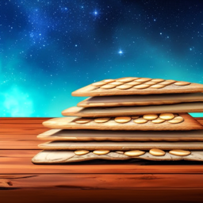

LMBS, the Eternal bread

Remember to always soak it, even cook it a second time if you can. As it is not tasty, even cambium will flavor it.
Remember to eat fibers with it, as it is not you gut's favourite.
The ingredients
- Two cups of flour
- Half a thumb of salt
- Three quarters of a cup of water
Steps
- Mix the flour, water and salt.
- Once it does not stick to your fingers anymore, it should be good.
- spread it and cut it in parts. Pierce it of holes, so it does not rise in the oven
- cook them for 30 minutes, flip them and 30 minutes again.
- Once cooled, wrap them.
Back to the Book